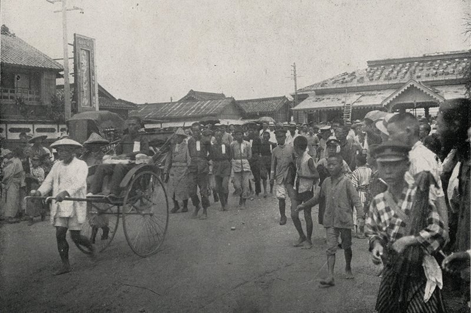

1624–1895
Under Japanese Rule 日治時期
Click here for details 
1895–1945

1945–1947

February 27 – May 16, 1947

1949–1987
Kaohsiung Incident 美麗島事件
Click here for details
December 10, 1979
DPP Formation 民主進步黨成立
Click here for details
September 28, 1986
Martial Law Lifted 解嚴
Click here for details
July 15, 1987

March 1990

March 23, 1996

March 18, 2000
Sunflower Movement 太陽花學運
Click here for details
March–April 2014
Legalization of Same-Sex Marriage 同婚合法
Click here for details
May 24, 2019

2020s–Present